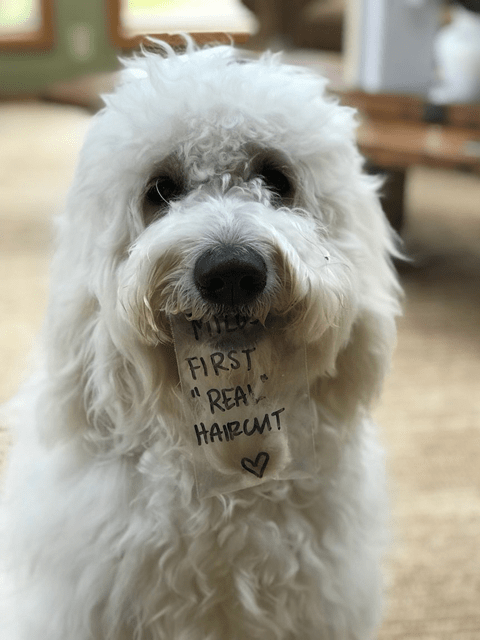

Chocolate Peanut Butter Buckeye Cake and a Life Update
Good day my friends,
It’s time to get back into the swing of things. I would say that I am ready for life to get back to normal… but I don’t have a clear understanding of what is normal anymore. haha I am back from Alaska and have spent the past few days trying to rejuvenate myself. If you missed what has been transpiring in my life lately, you can read about it here as well as in our member Facebook group. I know a lot of you don’t do Facebook and I am not trying to force anyone over there, but I will say that I do frequent posts there about to what is happening in my day to day life. There isn’t a good platform to do that here on NouveauRaw. So, here’s the scoopy-doop…
The Mom Update
For all of you who have been praying and asking about how my mom (Debbie) is doing… I am happy to report that her healing process is going well. To back up a tad, mom’s surgery went without a hitch. It was a long day for my sister (Neisha) and I as we waited for the doctor to come out with the report. I can tell you how many ceiling tiles are in the waiting room, how many floor tiles it took to create the hallway between the waiting room and front entrance, I know where every bathroom is on the surgical floor, and I can tell you every gum option that the gift store sold. What seemed like an eternity, the doctor finally appeared through the doors with a tired, yet glowing smile on his face. He motioned us into the consultation room where he proceeded to show us X-rays of the completed work he had done.
They had to place a metal plate in her arm that basically reached from one end of her humerus bone to the other. He then put eight screws into her arm to hold everything back into place. He stated everything went quite well and that she had good healthy bones. As we walked from the room, a tiredness overcame us. I am pretty sure it was all the prayers that held us upright from exhaustion that keep us going up until this point. Mom had to stay in the hospital for roughly twenty-four hours, so they could monitor her pain.
Now comes the hard part for mom. BUT with all the prayers, I have a feeling that she is going to heal with grace and ease. She will have to do all the work to keep strengthing her bones and muscles so things don’t lock up and I have to share that she IS a determined woman! My mom is a magnificent artist, so she has that as a huge inspiration to get herself back into the groove again. She injured her right arm and she is right-handed. But I have a feeling this won’t stop her. In fact, I know it won’t. I started to witness that before I had to leave her side.
Back on the Farm

Leaving mom was so hard (as it always is), but she was in good hands, and I was needed back home. Plus knowing that mom would be following behind me soon (coming here to continue rehab)… made it bearable. No sooner had I unpacked my suitcase, Bob fell ill with some flu bug. My nursing days weren’t quite over. I joked with the Nouveauraw Facebook group that I was going to move all my family into one spot and put a bubble around them! (in designing stage right now haha)
I also came home to a Mr. Milo (puppy) who looked more like a sheepdog then a Goldendoodle. So we had a spa day at the groomers. He came home fresh as a daisy and had his first real haircut. What a cutie-pie!
Anyway, with mom mending, and Bob feeling better, and me slowly getting caught up on sleep, I am starting to do what I do best, and that is to create a mound of dirty dishes in the test kitchen. Haha, I needed to make a dessert for our upcoming music jam sessions so where did I turn?
Nouveauraw of course! I decided to remake my Chocolate Peanut Butter Buckeye Cake (formally known as Frozen Chocolate Peanut Butter Buckeye Cake). I removed the word “frozen” from the title because the cake doesn’t need to remain frozen and I didn’t want that to detour anyone from making it. It was a recipe that I had created back in 2011, and the pictures were prehistoric! They needed to be updated.
Along with the photos, I took the time to update the posting (talked more about why and how I used certain ingredients, added gram measurements and cleaned up the instructions). My skills have improved greatly over the years, so I like to revisit recipes to give them a facelift. I didn’t change the ingredients, but I did add an option that helps to reduce the glycemic load of the dessert. Click on the link below to visit the cake recipe.

So, that sums it up for now. Thank you for your patience, and I trust that you are all doing well. I look forward to hearing from you. Blessings, amie sue
© AmieSue.com